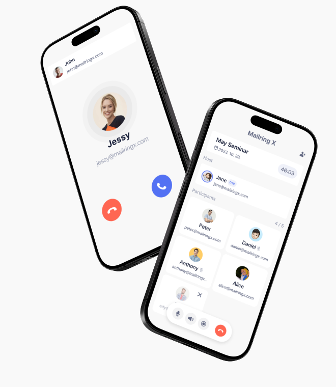
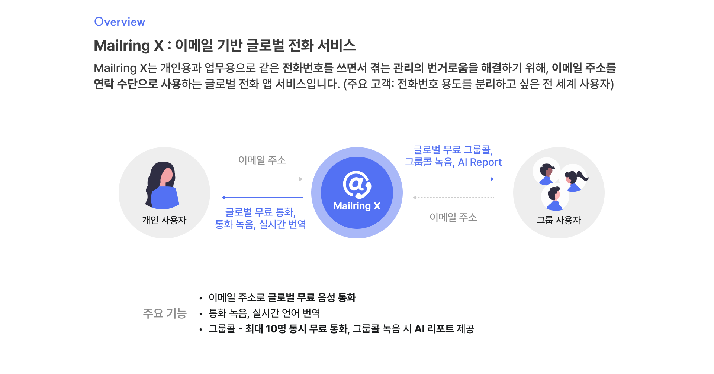
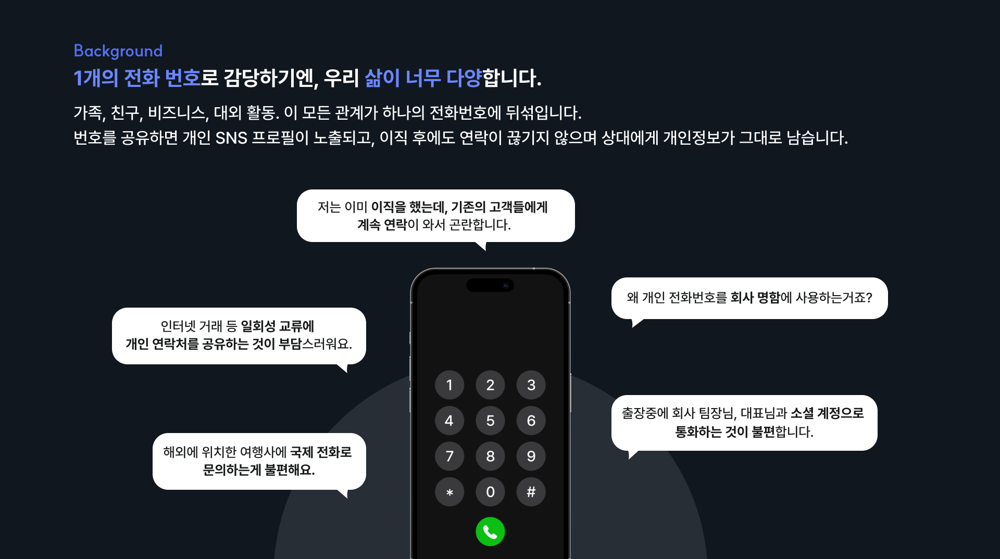
이메일을 통화 수단으로 사용하여 개인 생활 영역에서 사회적 관계 영역을 분리합니다.
이메일을 전화 번호처럼 사용하여, 개인 번호 하나에 뒤섞였던 개인 생활과 사회적 관계를 분리합니다.
개인 소셜 메신저 노출 없이 필요한 연락만 주고 받습니다.
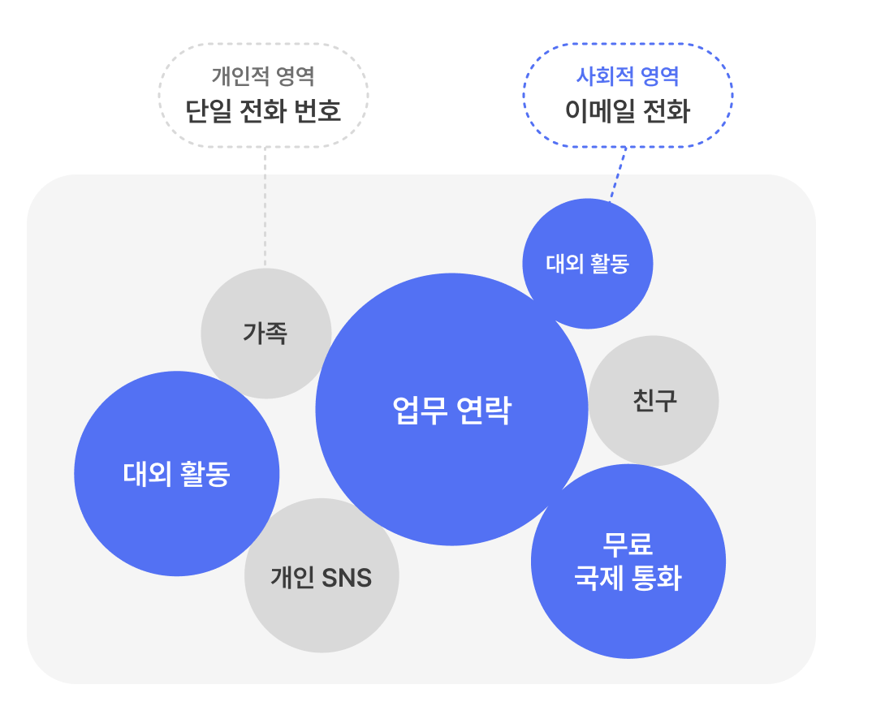
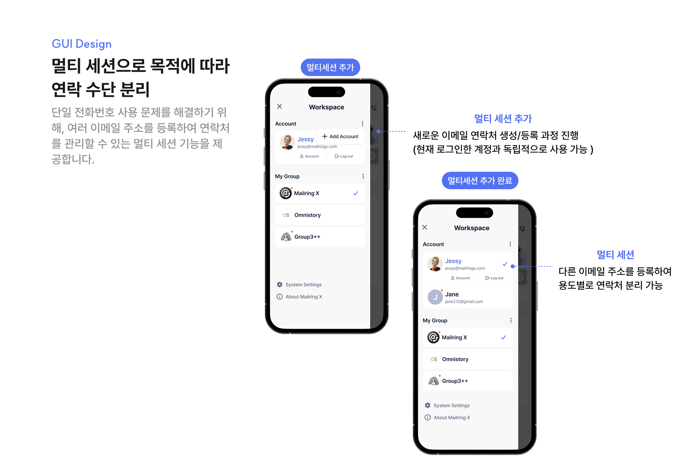
기본 전화와 같은 사용성으로 친근한 사용감
iOS와 Android 각 플랫폼의 가이드라인과 사용자 습관을 반영하여, 자연스럽게 사용할 수 있는 전화 UX를 설계했습니다.
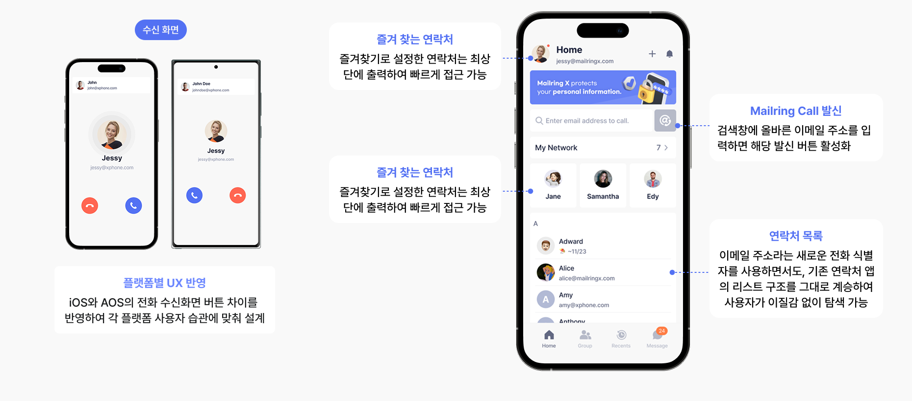
최대 10명까지 동시 통화가 가능한 그룹콜
그룹원이라면 누구나 그룹콜을 개설할 수 있습니다.
그룹콜 화면에서는 호스트와 게스트의 역할 차이를 명확히 구분하여, 각자의 맥락에 맞는 기능만 노출되도록 디자인했습니다.
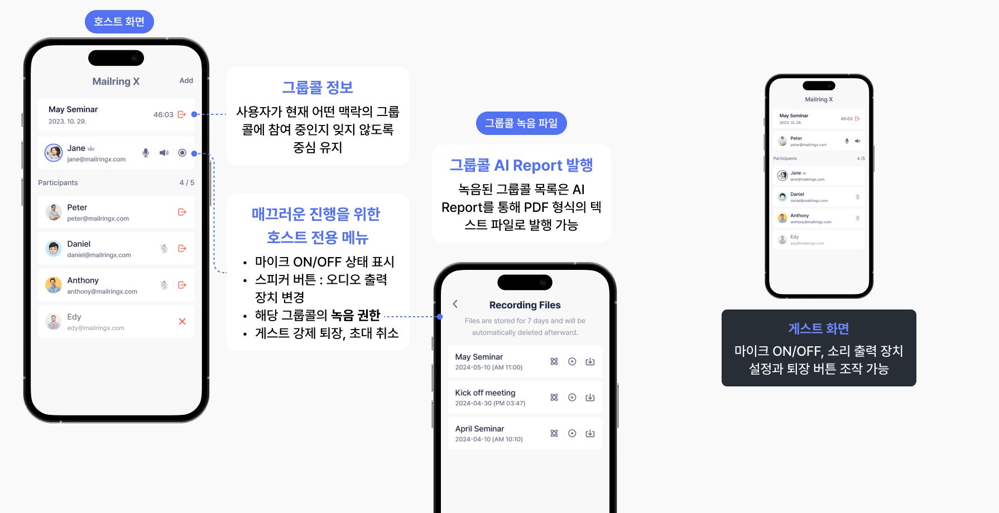
명함 OCR 스캔으로 자동 연락처 등록
명함을 촬영하여 연락처를 등록하는 흐름 설계로, 정보를 직접 입력해야 하는 번거로움을 최소화.
스캔 → 확인 → 저장의 각 단계에서 사용자가 태스크를 직관적으로 인지할 수 있도록 디자인했습니다.
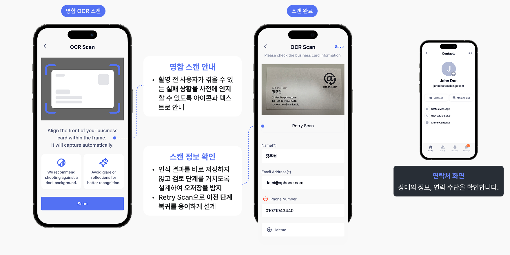
인터랙션의 기준 통일을 위한 프로토타이핑
1차 배포 후 iOS, Android 개발자가 화면 전환과 인터랙션을 각자 임의로 구현하면서 동작의 일관성이 떨어지는 문제가 발생했습니다.
이를 개선하기 위해 2차 업데이트부터 Figma 프로토타이핑을 도입하여 OS별 화면 전환과 마이크로 인터랙션의 기준을 명확히 정의했습니다.
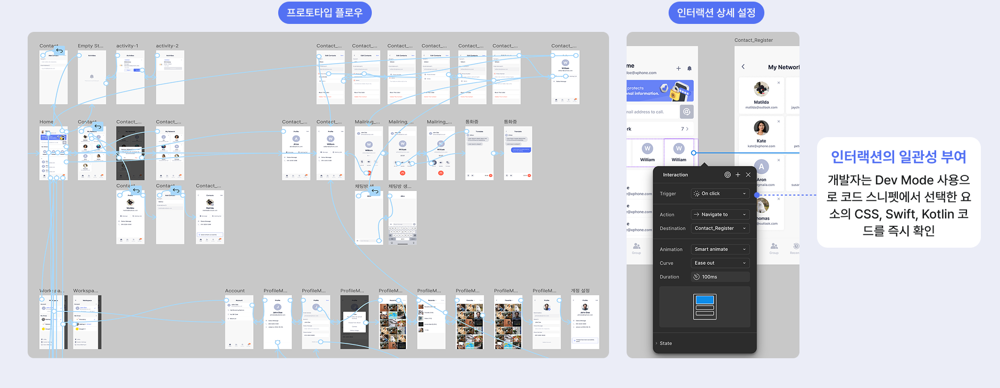
개발 과정 리터치 최소화를 위한 기능 정의서 작성
사용자 실수나 네트워크 오류 등 발생 가능한 변수를 사전 정의하여 전체 화면의 버튼 클릭, 데이터 입력, 페이지 전환 등 인터랙션을 기술적으로 명세한 기능 정의서를 작성했습니다.
→ 이를 통해 개발팀과의 커뮤니케이션 비용을 절감하고, QA 단계에서 기준 문서로 활용하여 개발 과정의 리터치를 최소화했습니다.
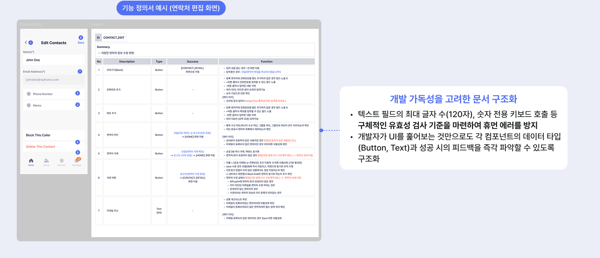
브랜드 정체성과 컴포넌트 기반의 일관된 디자인 체계
글로벌 커뮤니케이션의 핵심인 '이메일과 전화'를 모티브로, 브랜드 아이덴티티와 재사용 가능한 컴포넌트 체계를 함께 정의해 시각적 일관성과 개발 효율을 동시에 확보했습니다.
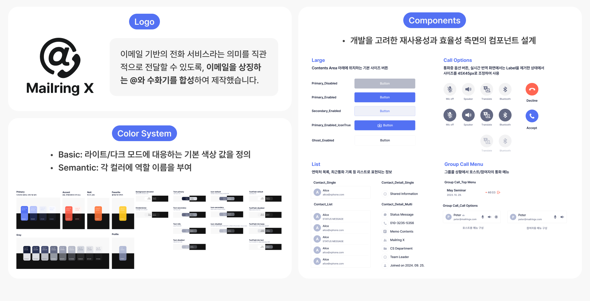
이메일을 사용한 1:1 통화, 그룹콜 사용성 확인
처음 만난 거래처 담당자인 [email protected] 으로
음성통화를 걸어보세요.
이메일 입력용 키패드 인지 : 보완 필요
통화 컨트롤 메뉴 사용 : 우수
팀 회의를 위해 그룹을 만들고 [email protected]과
[email protected]을 초대한 후 그룹콜을 생성해 보세요.
그룹콜 생성 버튼 인지 : 우수
게스트 초대 여부 : 우수, 메뉴 버튼 보완 필요
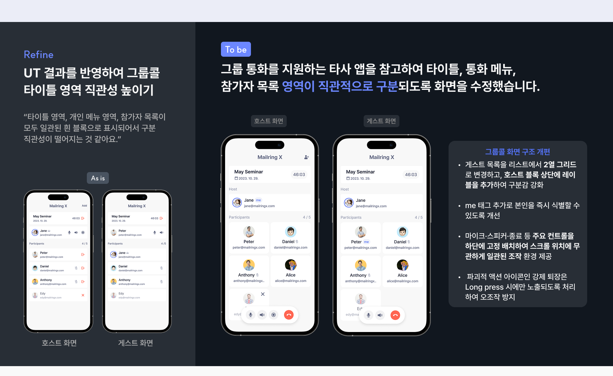
서비스 런칭의 0 to 1 전 과정을 경험했지만, 사용자의 습관을 바꾸는 일이 가장 어렵다는 것을 배웠습니다.
플랫폼별 가이드라인을 따르는 것이 사용자의 학습 비용을 낮추고 오조작을 방지하는 데 직결된다는 것을 배웠습니다. UI 디자인 이후 기술 명세서를 작성하는 과정에서 디자이너가 예외 케이스까지 사전에 정의할수록 전체 일정을 효율적으로 이끌어 나갈 수 있다는 것을 깨달았습니다.
기본 전화 사용 습관이라는 강력한 행동 장벽을 극복하지 못했고, B2C·B2B를 동시에 노린 탓에 핵심 타겟이 흐려졌습니다. 앞으로는 명확한 타겟 유저와 데이터를 기반으로 핵심 문제를 뾰족하게 정의하고 해결하는 것이 비즈니스적으로 의미있다는 것을 느꼈습니다.